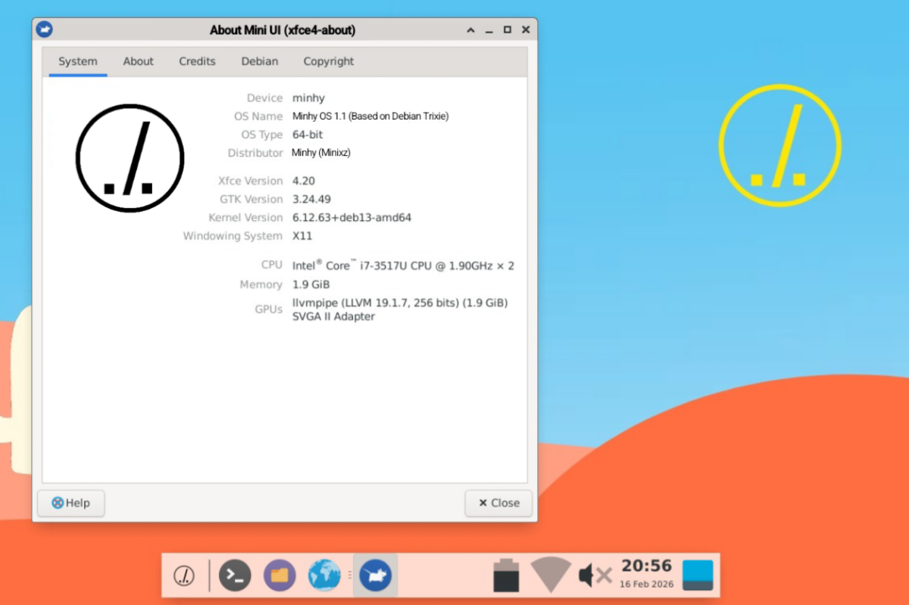

M. Adelio Altisa M.
Siswa SMA • Developer • OS Enthusiast
Tentang Saya
Singkat saja, nama lengkap saya tertera diatas tuu dan saya biasa dipanggil Adelio di lingkungan saya, yap itu panggilan formal universal (klo panggilan khusus sebaiknya jgn dicari tau, aneh2 semua jir??)
Saat ini saya sedang menempuh pendidikan di salah satu SMA yang ada di Kota Kudus, yakni SMA Negeri 1 Kudus sebagai siswa kelas 10.
Untuk bakat dan minat lebih mengarah kepada bidang IT (Information Technology) and yeah, halaman yg anda lihat saat ini adalah hasil kegabutan saya saat libur ramadhan. btw info ps let
Kreasi Saya
MiniCode Studio

Aplikasi pertama yg saya buat dlm waktu hanya sekitar 3 jam 😋.
Klik untuk detail →
Memungkinkan pengetikan/coding semacam VSCode Studio tapi dengan size ringan. Memiliki Code Editor & Text Editor.
Mendukung semua format file teks seperti .txt, .py, dll.
Download
Simple Dock

Manfaatkan HP lama kamu jadi Smart Display estetik.
Klik untuk detail →
Menampilkan jam, tanggal, EPN, baterai, volume, dan intensitas cahaya. Terintegrasi WebView musik YouTube Music.
Dilengkapi fitur Anti Burn-In untuk layar AMOLED/OLED agar pixel tidak overheat.
Belum up
Minhy OS

Sistem operasi berbasis Debian Linux konsep Hybrid.
Klik untuk detail →
Mendukung jalannya aplikasi Windows (.exe, .msi) dan Linux (.deb) secara native.
Dilengkapi Hybrid Power Plan, Controlled Hybrid CPU Management, dan WiH Control Panel.
Lihat Progress
YouTube Channel
Membuat konten seputar tutorial game dan pembahasannya.
Klik untuk detail →
ntah, jrg upload
Kunjungi Channel